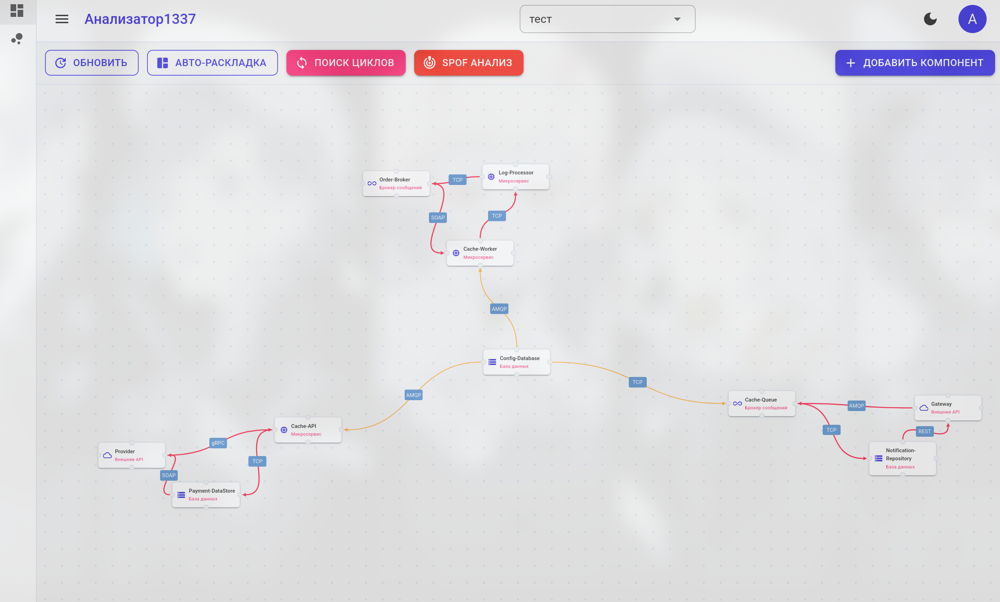
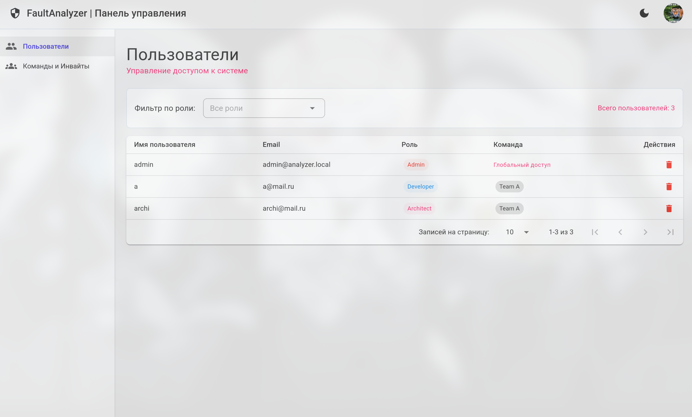

Система предназначена для моделирования IT-инфраструктуры в виде ориентированного графа зависимостей, автоматического поиска единых точек отказа, выявления циклических связей и прогнозирования распространения каскадных сбоев при проектировании распределенных микросервисных систем.

Визуализация топологии микросервисов, палитра связей по протоколам и запуск симуляции сбоя.

Управление пользователями и командами, генерация приглашений.